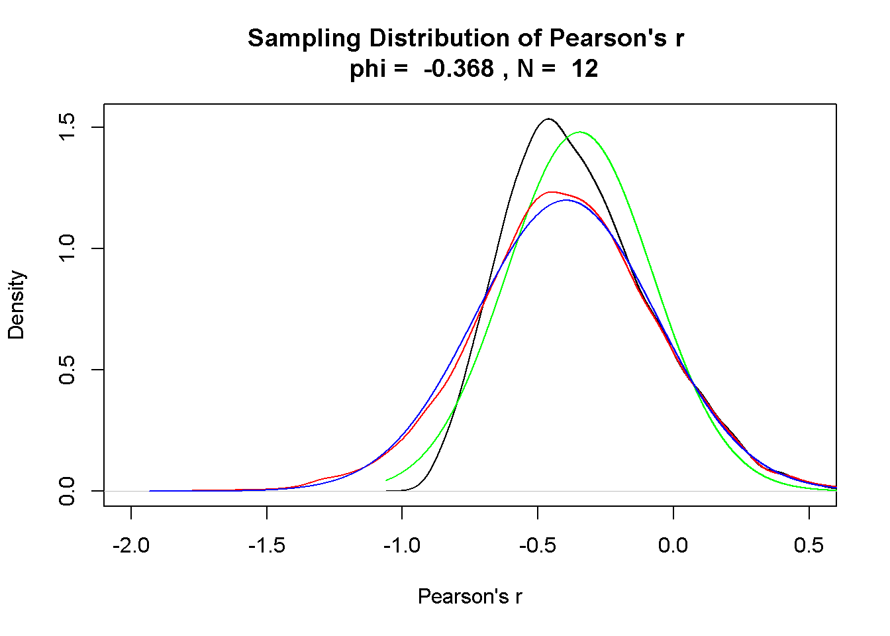
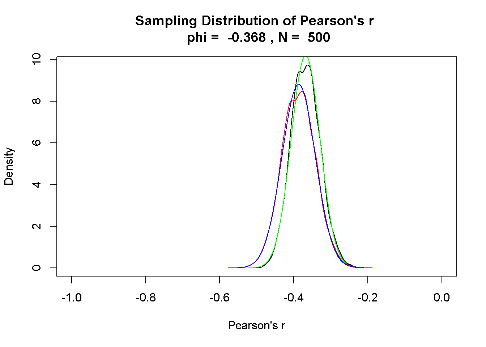
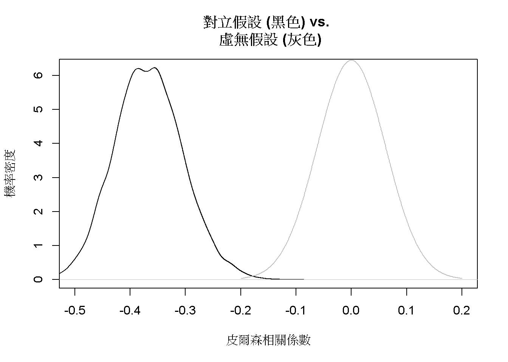
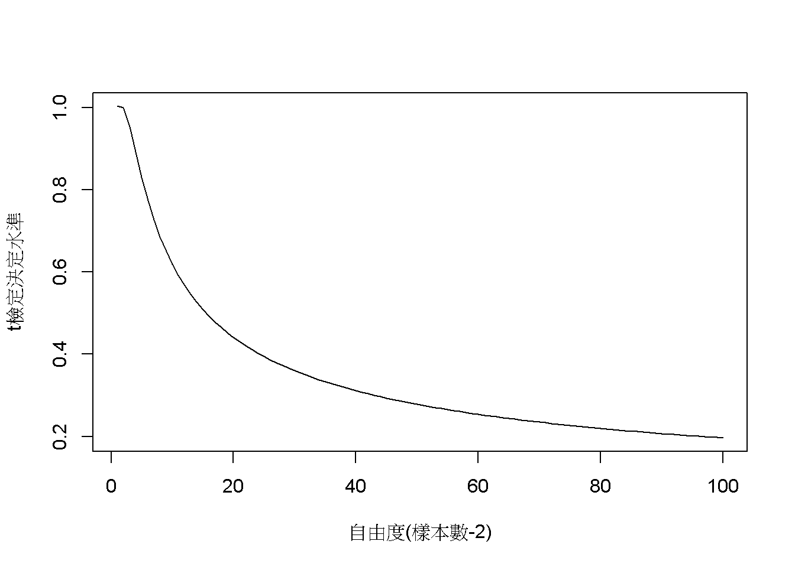
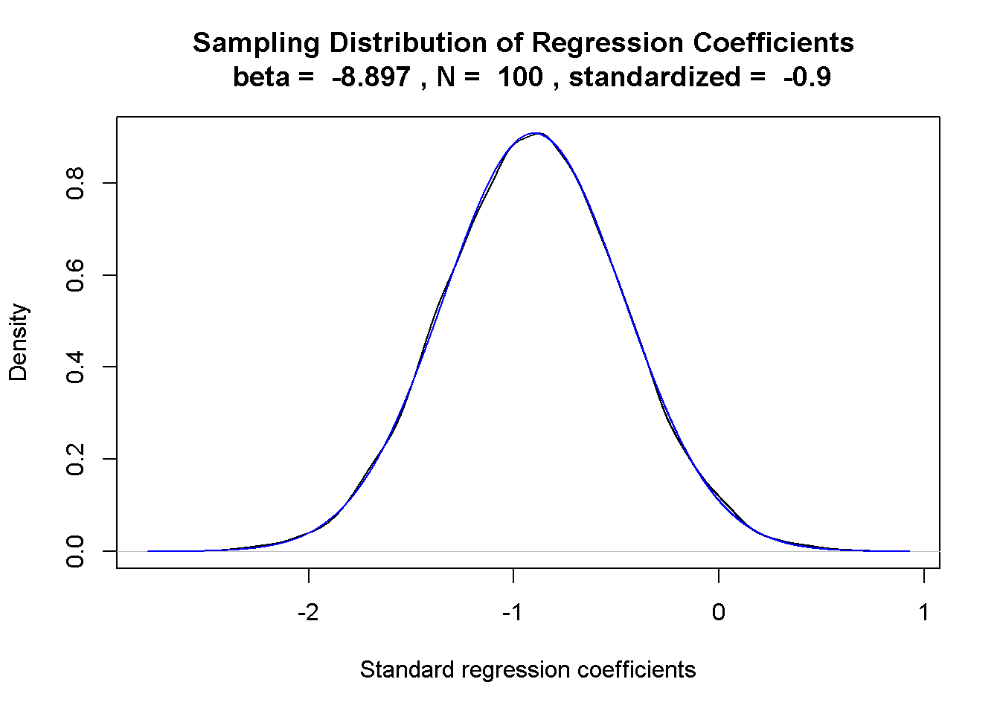

第8單元 相關與迴歸
這個單元介紹兩個連續變項相關程度的皮爾森相關係數，以及如何計算兩者之間的簡單迴歸。以統計方法的發展歷史來說，相關與迴歸的分析方法比假設檢定還早出現。早在十九世紀，Francis Galton(他的表親是提出演化論的Charles Darwin)測量大量不同人種的感官能力與各式運動反應資料，他把各種資料湊成好幾對，繪製成一系列散佈圖(scatterplot)，歸納出第一套計算迴歸係數的方法。他想要運用資料之間的迴歸，分析不同人種之間的差異。儘管理論和研究方法都還不夠成熟，Francis Galton收集與分析資料的方法直接影響智力的研究與智力測驗的發展。
進入大數據時代，資料科學家想做的事情和Francis Galton差不了多少，都是計算一系列變項的相關性，挑出其中最可能預測變項A的變項B，評估兩者迴歸關係的預測能力。在雙變項的世界，變項之間的共同變異(covariance，以下簡稱共變)，是表達變項相關的最佳指標。
8.1 案例介紹
相關係數的示範案例採用五大性格特質的真實資料。五大性格由情緒不穩定性(Neuroticism)、外向性(Extraversion)、經驗開放性(Openness)、親和性(Agreeableness)、盡責性(Conscientiousness)等五種主題的測驗題目組成。示範資料來自 Dolan et al. (2009) 收集500位大學新生的施測資料，JASP與jamovi都有收錄這筆公開資料。除了示範如何利用兩種軟體製作符合寫作格式的相關係數表格，jamovi示範檔也提供相關係數抽樣分佈的模擬程序。
簡單迴歸的示範資料來自 Navarro and Foxcroft (2018) 提供的案例。這項案例紀錄一位新手爸爸在小孩出生後一百天裡，小嬰兒的睡眠時間，爸爸的睡眠時間，以及爸爸用0到100分自評的情緒低落程度。本單元將用JASP與jamovi示範，如何算出以爸爸的睡眠時間預測情緒低落程度的簡單迴歸，以及探討迴歸係數的抽樣分佈。
8.2 皮爾森相關
皮爾森相關係數是兩個變項之間的共變數(Covariance)，與標準差乘積的相除。設定兩個變項來自的母群體都是常態分佈( \(N(\mu_X, \sigma_X), N(\mu_Y, \sigma_Y)\) )，皮爾森相關係數的公式就可寫成：
\[ \rho_{X,Y} = \frac{cov(X,Y)}{\sigma_X \sigma_Y} \]
如同五大人格特質的測量資料都是由母群體取隨機抽樣的樣本，任兩個人格特質的相關係數在報告中都記為r，以樣本平均數與標準差計算，計算公式是：
\[ r_{xy} = \frac{\sum x_i y_i - n \bar{x} \bar{y}}{(n-1)s_x s_y} \]
表??呈現JASP輸出五大人格特質之間相關係數，讀者可由JASP示範檔或jamovi示範檔了解輸出表格內容的模組設定。我們使用相關係數絕對值最大的盡責性與情緒不穩定性(-0.368)，探討相關係數抽樣分佈的特性。
圖 8.1: 五大人格特質：JASP輸出報表。
8.2.1 相關係數的抽樣分佈
JASP與jamovi提供的相關係數範例資料，都有上百筆的觀察值。原因是樣本數不足一百的隨機樣本所累積的抽樣分佈，不會是像常態分佈一樣的對稱分佈，如此一來就會造成型一錯誤率與考驗力的估計偏差。這樣的狀況需要使用費雪轉換，才能將抽樣分佈轉換為常態分佈。下面的費雪轉換公式，可轉換所有來自同一母群體的所有樣本相關係數。轉換後的樣本相關係數平均數會略高於原始平均數，標準誤必接近\(\frac{1}{\sqrt{n-3}}\)。
\[F(r) = \frac{1}{2} ln \frac{1+r}{1-r}\]

以 Dolan et al. (2009) 的五大人格特質資料 為例，如果盡責性與情緒不穩定性相關係數的母群體是\(\rho = -0.368\)，只收集12位學生的資料，模擬10000筆樣本相關係數形成的抽樣分佈如同圖??呈現負偏態的黑色曲線，與分佈中心是-0.368的常態分佈(綠色曲線)有明顯的差異。10000樣本相關係數經過費雪轉換，形成的抽樣分佈(藍色曲線)與平均數是-0.41及標準誤是0.34的常態分佈(紅色曲線)完全契合，此標準誤相當接近以公式\(\frac{1}{\sqrt{n-3}}\)計算的0.33。

將樣本數增加至如範例資料一樣的500人，樣本相關係數的抽樣分佈就會契合對稱的機率分佈，如圖??代表抽樣分佈的黑色曲線，完全符合抽樣分佈平均數-0.37與標準誤0.04的常態分佈(綠色曲線)。費雪轉轉換後的抽樣分佈(藍色曲線)雖然也符合常態分佈(紅色曲線)，但是估計的期望值-0.39明顯不同於母群體。由此例可知，運用相關係數分析資料的研究，收集的樣本數要達到上百筆。

在相關係數的假設檢定，這道抽樣分佈就是對立假設，相對於平均數 為0的虛無假設。如果這筆樣本不是來自相關係數為0的母群體，只有相當低的機率出自相關係數為0的抽樣分佈。圖(fig:big5-hypo)呈現對立假設與虛無假設的視覺化。
8.2.2 相關係數的強度
圖(fig:big5-hypo)也體現相關係數是一種效果量，所以一次研究得到的相關係數要多高才算理想，必須考慮收集的樣本數。有些統計教材表列所謂的強中弱相關係數，這樣的區分並未考慮樣本數。在此以檢定水準為.05的雙側t檢定為例，圖(fig:corr-crit)列出自由度1到100，與可否定虛無假設的最小相關係數。讀者可運用jaomvi示範檔案，自行修改樣本數與檢定水準的p值，察看符合需要的理想樣本數與相關係數。

8.3 簡單迴歸
迴歸的重要功能是使用自變項(X)的數值，估計依變項(Y)會出現的數值。任何有自變項與依變項能形成無限多種線性迴歸關係，統計實務是取得通過自變項與依變項之平均數，且自變項估計的依變項數值(\(\hat{Y}\))與實際依變項數值(Y)之差異最小的迴歸關係。兩者之間的差異是以差異平方和總計，所以使用這種方式求得的迴歸關係又稱為最小平方迴歸。
8.3.1 範例分析示範
我們使用新手爸爸照顧小嬰兒100天紀錄，以爸爸的睡眠時間估計情緒低落程度的簡單迴歸，透過JASP示範檔案與jamovi示範檔案示範如何計算以及擷取報告資訊。JASP使用Regression模組的Linear Regression功能，在設定選單的Dependent Variable匯入dan.grump；Covariates匯入dan.sleep。即可輸出圖8.2的報表：從上面開始第一個表格Model Summary是預設輸出的報告，其中的R是自變項與依變項相關係數之絕對值，\(R^2\)是依變項的變異可被自變項估計的比例，但是這個數值在簡單迴歸並無明顯功能。第二個報表ANOVA需要於設定選單裡的Statistics勾選Model fit，這份報表報告的內容於稍後單元8.3.3介紹。第三個報表Coefficients需要於設定選單裡的Statistics勾選Estimates，這個報表指出這道直線迴歸的截距是125.96，迴歸係數是-8.937，這兩個數值都是隨機變數，所以報表有兩項數值是否為0的統計檢定結果；Coefficients的另一個重點是Standardized這欄的數值只有自變項，這個數值是兩個變項的標準化迴歸係數，也就是相關係數，是以兩個變項的標準化分數(\(z_y, z_x\))計算得出，所以迴歸線必定通過散佈圖座標軸原點，截距必為0。最後一個報表Descriptivies需要於設定選單裡的Statistics勾選Descriptives，呈現兩個變項的資料個數、平均值、樣本標準差、與樣本標準誤。情緒低落程度的估計標準誤除以爸爸睡眠時間的估計標準誤，再乘以兩個變項的相關係數，就是迴歸係數-8.9。所以簡單迴歸的迴歸係數與相關係數關係，可用以下公式表現：
\[r_{xy} = \frac{se_y}{se_x} \cdot b\]
圖 8.2: 新手爸爸育兒紀錄簡單迴歸分析：JASP輸出報表。
8.3.2 迴歸係數的抽樣分佈

我們已知迴歸係數也是一種隨機變數，所以我們可以稍微改裝相關係數抽樣分佈的模擬程序，探索迴歸係數的抽樣分佈。在jamovi示範檔案的模擬程序程式碼首四行，除了樣本數與相關係數，還有自變項與依變項的樣本標準誤。這段模擬程序以新手爸爸的分析結果設定這四個數值，得到圖??符合常態分佈的抽樣分佈。這道抽樣分佈的平均數是-0.9，標準誤是0.43，極為接近圖8.2的Coefficients報表報告的標準化迴歸係數，以及自變項的標準誤。讀者可以嘗試改變兩個變項的標準誤，形成的抽樣分佈雖然標準誤會有變化，平均數依然接近標準化迴歸係數。
8.3.3 最小平方法
現在可以談談最小平方法的真正意義。自變數的數值經由迴歸線得到的依變項估計值，應該與實際的依變項數值相差越小越好。每一筆估計值與實際值的差異平方，在統計學中被稱為殘差(residual)，總和稱為殘差平方和(Sum of Squared Error，簡記SSE)。符合最小平方的線性迴歸，殘差平方和必須小於其他線性迴歸。前面單元說明為何有其他機率分佈比常態分佈，更符合該範例的抽樣分佈，正是借用這種方式判斷模擬結果。
在爸爸育兒紀錄的分析之ANOVA報表，可知SSE是1838.714，jamovi示範檔案有計算每一筆估計值與觀察值的差異平方，運用描述統計模組計算所有差異平方加總，確實符合這個數值。所有估計值與依變項平均的差異平方總和，正是迴歸平方和(Sum of Squared Regression)。兩種平方和的加總，剛好就是觀察值與依變項平均的差異平方總和(Sum of Squared Total)。ANOVA報表中報告的F檢定是確定迴歸平方和平均值(Mean Squared Regression)，的確大於殘差平方和平均值(Mean Squared Error)。如果迴歸係數的t檢定確定迴歸係數不為零，F檢定的報告應該也會一致。有關F檢定的原理與使用方法，我們將在第9單元學習。
8.3.4 簡單迴歸的信賴區間
在前面的單元裡，我們都有學到計算信賴區間的方法。簡單迴歸的信賴區間是指根據設定的信賴水準(如95%)，有多少比例的依變項觀察值，是在迴歸線的預測範圍之內。jamovi線性迴歸模組提供的繪圖選項，能標示信賴區間範圍，如圖8.3的示範。信賴區間的寛度是估計標準誤的倍數，從以下估計標準誤公式可知，正是殘差平方和平均值的開根號。
\[S_{y \cdot x} = \sqrt{\frac{(Y-\hat{Y})^2}{n-2}}\]
圖 8.3: 新手爸爸育兒紀錄簡單迴歸分析：以jamovi繪製迴歸線與95%估計區間。
8.4 總結
- TBA
8.5 習題
- TBA
References
Dolan, Conor V., Frans J. Oort, Reinoud D. Stoel, and Jelte M. Wicherts. 2009. “Testing Measurement Invariance in the Target Rotated Multigroup Exploratory Factor Model.” Structural Equation Modeling: A Multidisciplinary Journal 16 (2): 295–314. https://doi.org/10.1080/10705510902751416.